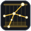

The Cygnus constellation picked out in gold over a brass warp, beams, and a length of woven cloth.

Cygnus Loom
A web-based RPG with an AI game master.
Favicon sizes — dark
16
24
32
48
64
128
Favicon sizes — light
16
24
32
48
64
128
True 16 px and 32 px renders
16 → 128
32 → 128
Top bar
Cygnus Loom
Browser tabs
Cygnus Loom
The Sunken Citadel · Cygnus Loom
App icon
Cygnus Loom
Design notes
Constellation: the Northern Cross — Deneb (tail, sparkle), Sadr (chest), Albireo (beak), Gienah and Delta Cygni (wings), with ζ on the outer wing and η on the neck.
Loom: six brass warp threads under tension between a warp beam and a cloth beam, with a short woven band, so the constellation reads as a pattern being woven.
Small sizes: the stars and cross stay bold while the brass warp fades back, so the mark still works as a 16 px favicon.
Assets: the editable source is src/cygnusloom/web/static/brand/cygnus-loom.svg; the PNGs and Windows .ico beside it are generated from it.